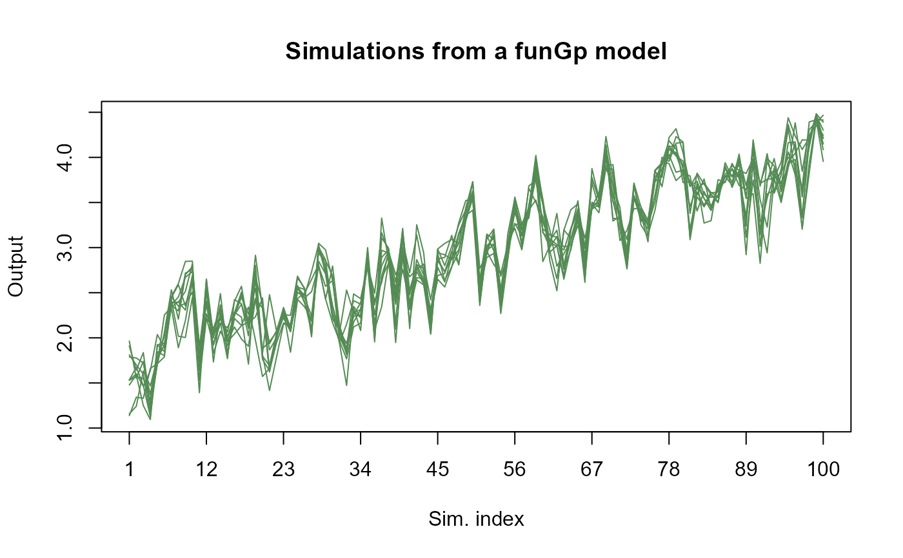
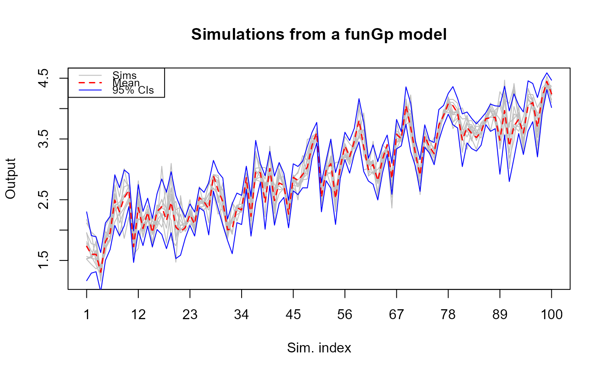
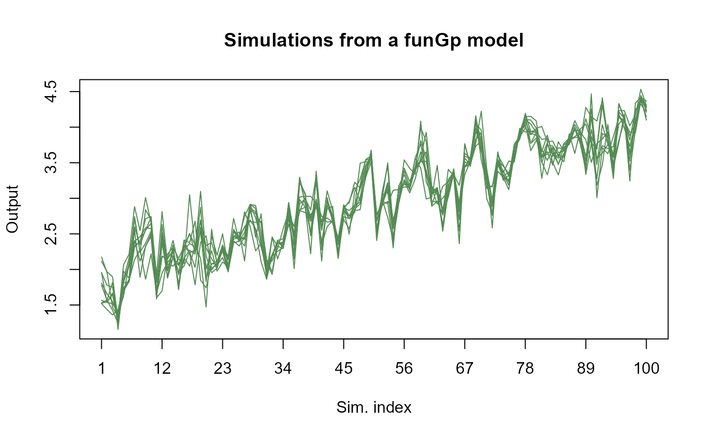

This method enables simulation of Gaussian process values at any given set of points
based on a pre-built fgpm model. Check fgpm for information on how to create funGp models.
An object of class fgpm corresponding to the funGp model from which simulations must be performed.
An optional integer indicating the number of samples to produce. Default is 1.
An optional value interpreted as an integer, that will be used as argument of
set.seed just before simulating the response values.
An optional matrix of scalar input coordinates at which the output values should be simulated. Each column is interpreted as a scalar input variable and each row as a coordinate. Either scalar input coordinates (sIn.sm), functional input coordinates (fIn.sm), or both must be provided.
An optional list of functional input coordinates at which the output values should be simulated. Each element of the list is interpreted as a functional input variable. Every functional input variable should be provided as a matrix with one curve per row. Either scalar input coordinates (sIn.sm), functional input coordinates (fIn.sm), or both must be provided.
An optional number corresponding to a numerical nugget effect. If provided, this number is added to the main diagonal of the simulation covariance matrix in order to prevent numerical instabilities during Cholesky decomposition. A small number in the order of 1e-8 is often enough. Default is 0.
An optional character specifying the extent of information that should be delivered
by the method, to be chosen between "light" (default) and "full".
Light simulations produce a matrix of
simulated output values, with as many rows as requested random samples. Full simulations produce a
list with the matrix of simulated output values, along with the predicted mean, standard deviation and
limits of the 95% confidence intervals at the simulation points.
Not used.
An object containing the data structures linked to simulations. For light simulations, the output will be a matrix of simulated output values, with as many rows as requested random samples. For full simulations, the output will be a list with the matrix of simulated output values, along with the predicted mean, standard deviation and limits of the 95% confidence intervals at the simulation points.
* plot.simulate.fgpm for the simulation plot of a fgpm model;
* predict,fgpm-method for predictions based on a fgpm model;
* plot.predict.fgpm for the prediction plot of a fgpm model.
# light simulations _______________________________________________________________________
# building the model
set.seed(100)
n.tr <- 25
sIn <- expand.grid(x1 = seq(0,1,length = sqrt(n.tr)), x2 = seq(0,1,length = sqrt(n.tr)))
fIn <- list(f1 = matrix(runif(n.tr*10), ncol = 10), f2 = matrix(runif(n.tr*22), ncol = 22))
sOut <- fgp_BB3(sIn, fIn, n.tr)
m1 <- fgpm(sIn = sIn, fIn = fIn, sOut = sOut)
#> ** Presampling...
#> ** Optimising hyperparameters...
#> final value 2.841058
#> converged
#> The function value is the negated log-likelihood
#> ** Hyperparameters done!
# generating input data for simulation
n.sm <- 100
sIn.sm <- as.matrix(expand.grid(x1 = seq(0,1,length = sqrt(n.sm)),
x2 = seq(0,1,length = sqrt(n.sm))))
fIn.sm <- list(f1 = matrix(runif(n.sm*10), ncol = 10), matrix(runif(n.sm*22), ncol = 22))
# making light simulations
m1.sims_l <- simulate(m1, nsim = 10, sIn.sm = sIn.sm, fIn.sm = fIn.sm)
# plotting light simulations
plot(m1.sims_l)

# full simulations ________________________________________________________________________
# building the model
set.seed(100)
n.tr <- 25
sIn <- expand.grid(x1 = seq(0,1,length = sqrt(n.tr)), x2 = seq(0,1,length = sqrt(n.tr)))
fIn <- list(f1 = matrix(runif(n.tr*10), ncol = 10), f2 = matrix(runif(n.tr*22), ncol = 22))
sOut <- fgp_BB3(sIn, fIn, n.tr)
m1 <- fgpm(sIn = sIn, fIn = fIn, sOut = sOut)
#> ** Presampling...
#> ** Optimising hyperparameters...
#> final value 2.841058
#> converged
#> The function value is the negated log-likelihood
#> ** Hyperparameters done!
# making full simulations
m1.sims_f <- simulate(m1, nsim = 10, sIn.sm = sIn.sm, fIn.sm = fIn.sm, detail = "full")
# checking content of the list
summary(m1.sims_f)
#> Length Class Mode
#> sims 1000 -none- numeric
#> mean 100 -none- numeric
#> sd 100 -none- numeric
#> lower95 100 -none- numeric
#> upper95 100 -none- numeric
# ~R output:~
# Length Class Mode
# sims 1000 -none- numeric
# mean 100 -none- numeric
# sd 100 -none- numeric
# lower95 100 -none- numeric
# upper95 100 -none- numeric
# plotting full simulations in full mode
plot(m1.sims_f)

# plotting full simulations in light mode
plot(m1.sims_f, detail = "light")
